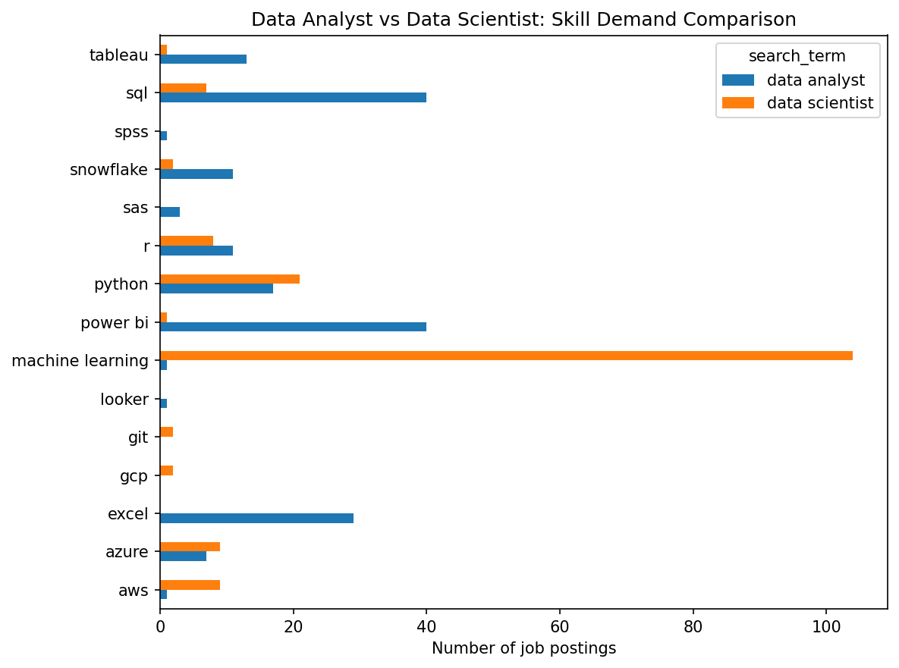
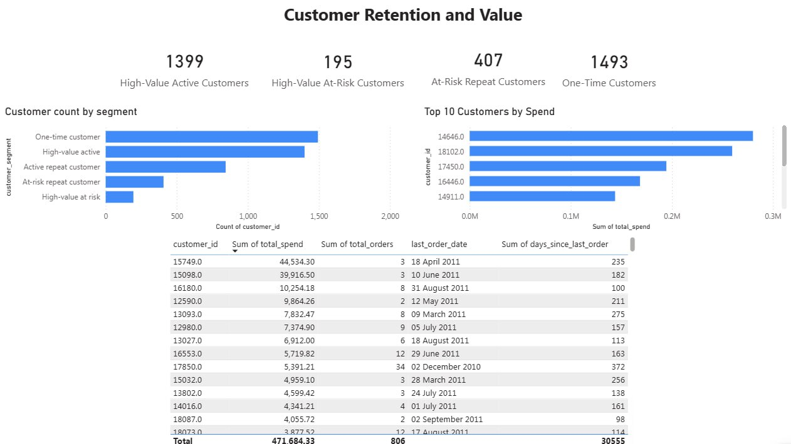
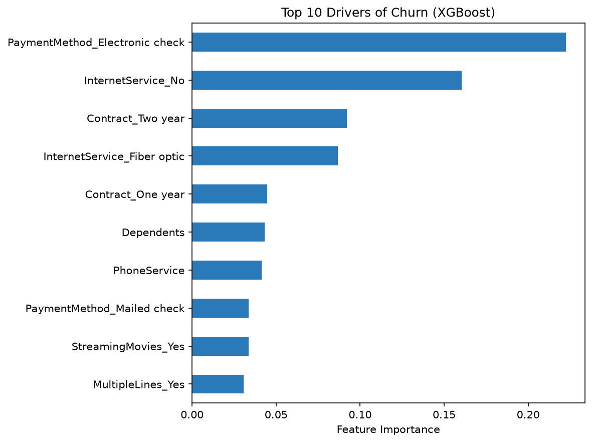
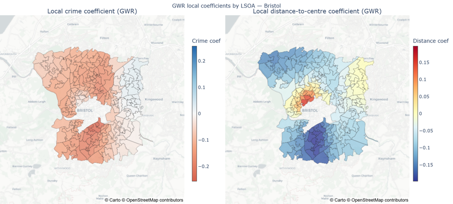
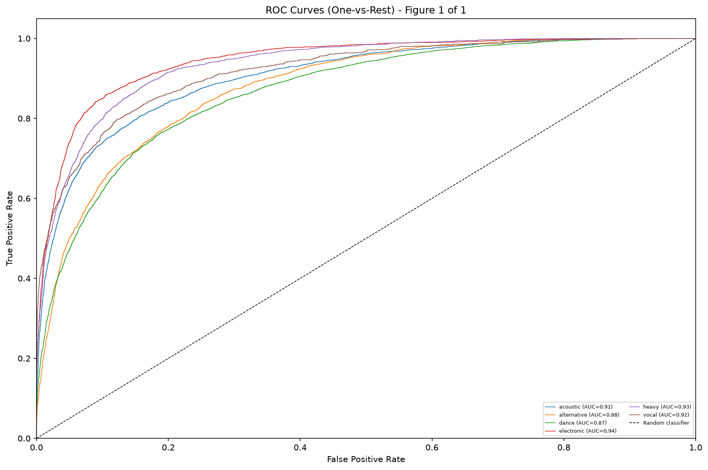

BSc (Hons) Data Science & AI graduate (First Class), UWE Bristol. Five end-to-end projects across SQL/Power BI dashboards, machine learning and geospatial analysis — seeking 2026 graduate roles in data analytics or data science.

Pipeline (API → SQL → keyword extraction → dashboard) built on 1,200 real UK job postings. Found that data analyst roles want SQL and Power BI, while data scientist roles want machine learning and pay roughly 1.5x more for it.

Three-page Power BI dashboard analysing 541,909 UK retail transactions. Flagged 195 high-value customers (£471.7k in historical spend) as churn risks, producing five prioritised business recommendations — including two targeted retention actions — each with a defined success metric and illustrative revenue impact.

Lifted churner recall from 58% to 77% on 7,043 telecom customers using SMOTE and decision-threshold tuning on an XGBoost classifier. Used XGBoost feature importance to identify payment method, internet service type and contract length as the strongest churn drivers.

Raised explained variance (R²) from 0.11 to 0.74 across 182 Bristol neighbourhoods by replacing global OLS regression with Geographically Weighted Regression on 34,543 house transactions and 159,666 crime records.

Classified 114,000 Spotify tracks into six genre-based mood clusters at 68% test accuracy and 0.90 macro ROC-AUC, engineering 27 audio features (42 total) and cross-validating a LightGBM model.
Python, SQL, PostgreSQL, SQLite
Pandas, Scikit-learn, XGBoost, LightGBM, Matplotlib, GeoPandas, Streamlit, Power BI, Git/GitHub, Excel
Statistical analysis, hypothesis testing, data cleaning, machine learning, cross-validation, API data collection, dashboard development, data storytelling